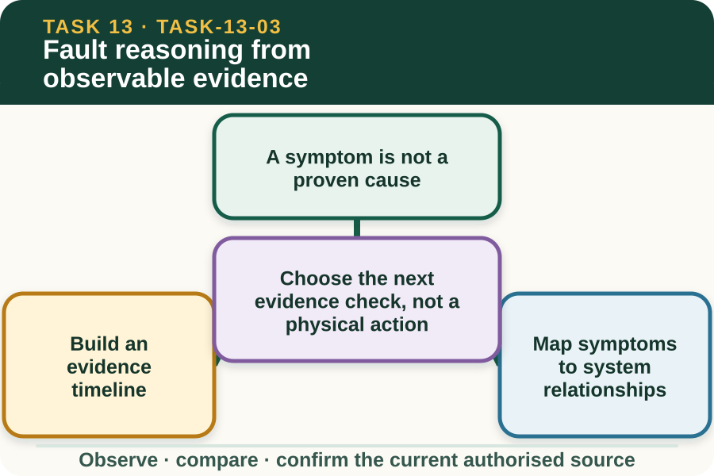
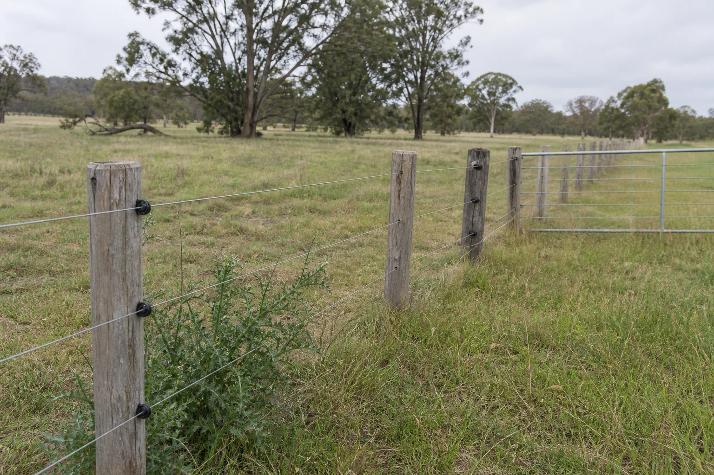

Learning purpose
Use fictional symptoms and records to choose the next safe inspection or escalation point.
Task 13 · Lesson 3 of 4
Use fictional symptoms and records to choose the next safe inspection or escalation point.
Learning purpose
Use fictional symptoms and records to choose the next safe inspection or escalation point.
Success criteria
Learning boundary
Supplementary learning and formative practice only. Current RTO assessment, local procedures and authorised supervision control real work.

A system symptom may be a changed livestock behaviour report, repeated boundary issue, visible damaged component, vegetation contact, missing sign or inconsistent maintenance record. Several different causes can produce a similar symptom.

Fault reasoning begins by recording the symptom, time, location and source. It does not begin by touching the system or selecting a repair from an online checklist.
Place observations, authorised status records, weather events, maintenance entries and reported changes in time order. A timeline can show whether the issue is isolated, repeated or connected to a documented change.
Check provenance for every entry. An undated message or copied photograph may suggest a question but should not be treated as confirmed evidence for the current system.
Use the conceptual component map to ask which relationship could be affected: intended conductor continuity, insulation from supports, earth-system relationship, gate connection, physical line condition or surrounding vegetation. These are reasoning categories, not repair directions.
List more than one plausible relationship when evidence is limited. The authorised person decides what may be inspected and which current manufacturer or local source controls that work.
A safe next step may be checking the current drawing identifier, reviewing the latest authorised status record, comparing dated photographs or asking the supervisor to clarify the affected segment. These actions improve information without approaching the system.
If the next question requires electrical measurement, enclosure access, physical contact or a practical inspection, the learner stops and refers it to the authorised person.
Fictional worked example
Observed evidence: A fictional log shows boundary concerns at Segment E-04 on 2, 5 and 8 October 2027. A dated photograph from 8 October shows vegetation contacting the line, while the current component record for E-04 is missing and the system status is not supplied. Decision and reason: Sophie identifies a repeated symptom and one visible relationship change but does not claim the vegetation is the sole cause. Safe action: She keeps the area at the hold point and asks the supervisor to verify the segment record and decide the authorised inspection. Result: The supervisor links the correct design record and controls all further work. Next check or record: Sophie updates the evidence timeline with the source identifiers and retains alternative possible causes as unresolved.
Evidence can support confirmed observation, plausible relationship or unresolved possibility. Naming confidence makes it harder for a tentative idea to become an assumed fact during handover.
A strong reasoning record says what would increase confidence and who is authorised to obtain that evidence. It never uses a website answer to declare a real electric fence safe or repaired.
The handover should identify affected segment, first and latest report, current status evidence, visible conditions, sources checked, plausible relationships, excluded actions and the next decision owner. This lets the authorised person start with organised evidence.
Do not include real property maps, access details or personal information in the public learning response. The controlled workplace record remains the official destination for real fault information.
Formative practice
Each option explains the consequence. These answers save only on this device.
Written application
Apply and keep a learning record
Order fictional reports by date, link them to a conceptual component map and classify each claim as observed, plausible or unresolved. Refer every physical evidence need.
Learning record: A supplementary-learning fault-reasoning timeline and handover with no practical troubleshooting steps.
Lesson responses and the activity are formative learning only. Formal sufficiency and competence remain with the current RTO process.
Source basis: AHCINF205 Release 1 fault, repair-requirement and reporting concepts interpreted within the senior VET supplementary boundary. Current manufacturer, workplace and supervisor sources control every real inspection, electrical determination and repair.